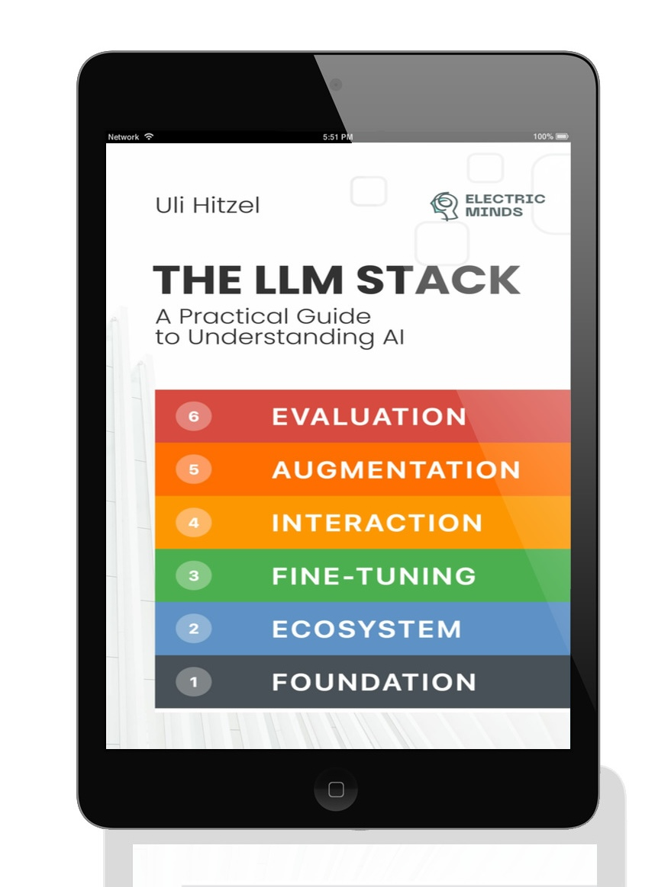

The LLM Stack
This is an online HTML version of The LLM Stack: A Practical Guide to Understanding AI. The book breaks down modern AI systems into six clear layers, explaining how they work and how you can use them effectively.
Table of Contents
- Introduction: Why Layers Matter
- Chapter 1: Foundation – The Engine Room
- Chapter 2: The LLM Ecosystem – Navigating the Model Zoo
- Chapter 3: Fine-Tuning – From Generalist to Specialist
- Chapter 4: Interaction & Output Control – Driving the AI
- Chapter 5: Augmentation – Breaking Free from AI's Bubble
- Chapter 6: Evaluation & Monitoring – Keeping AI on Track
- Bonus Chapter: Staying in Control
- About the Author
